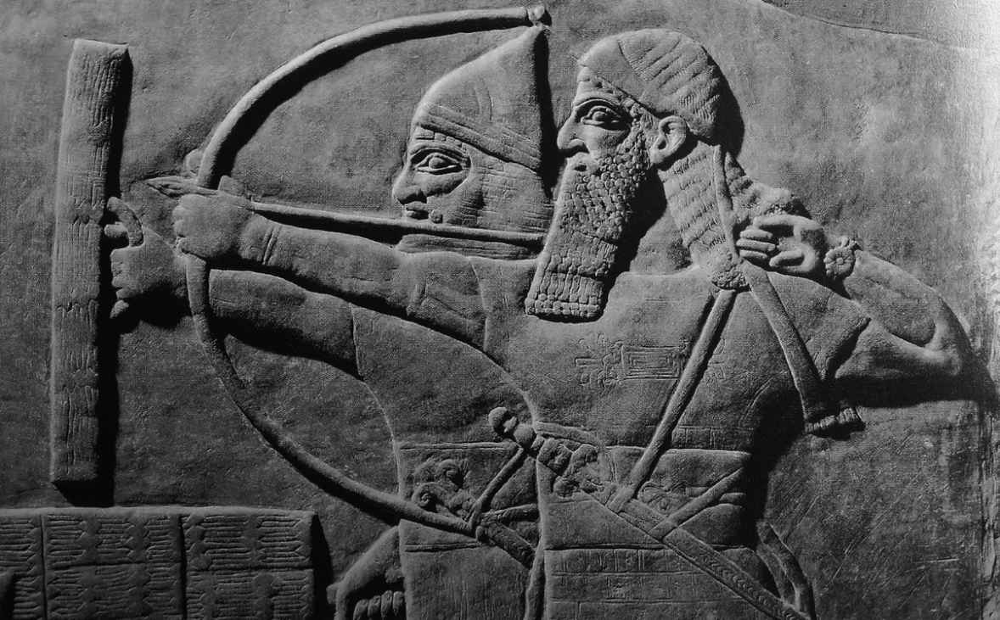
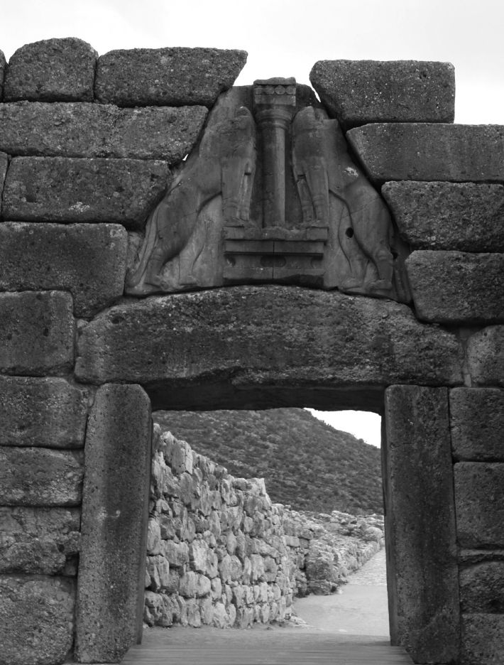
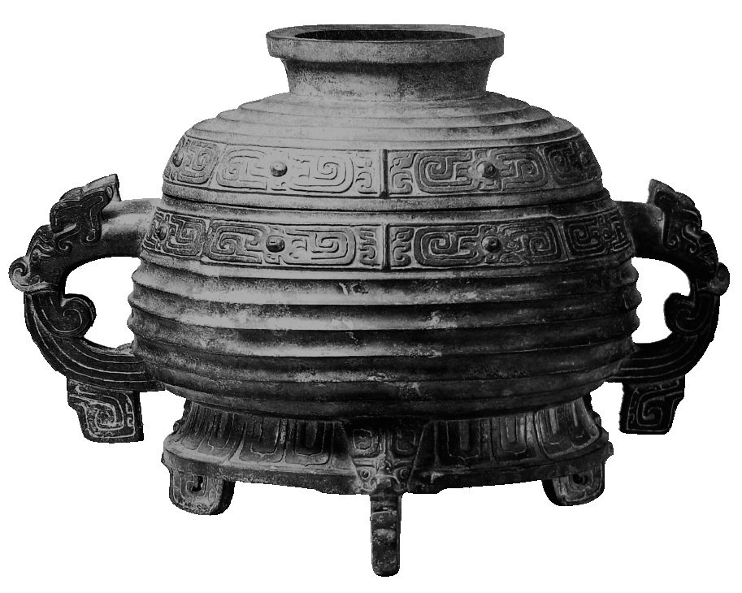

游牧民凭借马和铁制武器，掀起了两次席卷诸文明中心的大规模的入侵浪潮。第一次约在公元前1700年至前1500年之间，入侵者通常是手执青铜武器，驾着马拉的战车侵入文明中心；第二次约在公元前1200年至前1100年之间，入侵者通常是骑在马上，用铁制武器作战。这些入侵不应看作取代当地种族、完全改变种族分布的大规模的游牧部落的入侵。而应说，是为数不多的入侵者，凭借军事技术上的优势，组成武士贵族集团，统治了在人数上远远超过他们的诸被征服民族。
最终结果，除中东外，各地文明均被摧毁。其他地方的帝国都迅速地、接二连三地崛起和崩溃。虽然中东由于其地理环境使外界易于进入，故遭到入侵的次数也最多，但那里的文明，连同其城市、宫殿、寺庙、书吏、商人和政府官员，还是幸存了下来。一个原因是，中东的文明由来已久，因而文明的根子扎得较深。另一个原因是，到公元前1700年，中东已有许多极为广阔的地区达到文明，因而不可能全被征服或摧毁。最后，入侵中东的通常不是刚从大草原或沙漠地带来的原始的野蛮人，而是早已居住在周围地区的半文明的野蛮人，他们在进行征服的过程中，已部分地为中东文明所同化。
中东
如果首先考察中东，那么蛮族入侵是始于公元前2000年前后，即印欧语系的赫梯人进入小亚细亚时。他们与当地诸民族联合，建立起一个包括小亚细亚和叙利亚大部分、但不包括美索不达米亚的庞大帝国。随赫梯人之后的是印欧语系的另外两批入侵者，即喀西特人和胡里安人。在这一时期内，即便是地理环境易守难攻的埃及，也遭到了种族成分复杂、然以闪米特人为主的一批入侵者即喜克索人的蹂躏。到公元前1500年，第一次入侵浪潮平息下来，中东为三大强国所控制：北方的赫梯帝国、南方的埃及帝国和东方的亚述帝国。

图24 亚述浮雕《弓箭手》，一位士兵拉弓开箭，另外一位用盾牌掩护他。
约公元前1200年前后，第二次蛮族入侵浪潮掀起，上述三大帝国间的均势遭到破坏。先前赫梯帝国和埃及帝国彼此长年征战不休，结果俱皆衰竭。三个入侵的闪米特民族填入这一真空地带：腓尼基人占领了地中海沿海一带；阿拉米人占据了叙利亚、巴勒斯坦和美索不达米亚北部；希伯来人占有了巴勒斯坦和叙利亚。约公元前1100年前后，强大的第二亚述帝国凭借其铁制武器、训练有素的军队、有效的官僚机构和架置在车轮上的铁制的破城槌，开始进行扩张。到公元前7世纪，第二亚述帝国以尼尼微为首都，囊括了整个美索不达米亚、小亚细亚、叙利亚、巴勒斯坦和埃及。但是，帝国的过分扩张和被征服民族的无法平息的敌意最终导致灾难性的结果。公元前612年，由诸敌对者结成的联盟摧毁了尼尼微，永远结束了亚述人在历史上所起的作用。
亚述人之后是波斯人，他们建立了到那时为止最大的帝国——波斯帝国。在国王居鲁士（公元前550——前529年在位）的率领下，波斯人利用亚述人的军事技术征服了从西面的尼罗河到东面的印度河的所有地区。整个中东第一次处于一个国家的统治之下，而诸蛮族入侵者则被强有力地排斥在国门之外。
希腊
与中东形成鲜明对照的是，希腊、印度和中国的文明都没能幸免于蛮族入侵。这些边缘地区的文明在时间和空间上都缺乏支持美索不达米亚文明和埃及文明的那种深度，所以都被消灭。因而，也正是在那些地区，随着新的宗教体系、社会体系和哲学体系的建立，出现了新的古典文明。

图25 建于希腊迈锡尼的狮子门。
最早侵入希腊的印欧语系的入侵者是亚该亚人，他们在公元前20世纪不时地侵入希腊。他们是手执青铜武器的战车兵，总的发展水平远远落后于米诺斯文明的克里特岛人。但是，到公元前1600年，这些新来的人已吸收了大量的传入大陆的米诺斯文化，并在从色萨利到伯罗奔尼撒半岛南端的广大地区建立了许多小王国。
伯罗奔尼撒半岛上的居留地距克里特岛最近，所以最先进。迈锡尼是伯罗奔尼撒半岛的中心，那里新兴的文明就是以它的名字命名的。迈锡尼时代的希腊居留地与克里特岛上的城市不同，都设有牢固的工事。通常是，巨大的城堡建筑在山顶上，供国王和他的臣僚居住。平民们把住房建在城堡外，但一遇危险，他们便躲入城堡避难。
迈锡尼人与定居中东和印度河流域的印欧语系的其他入侵者不同，他们仿效古代克里特岛人，面向海洋，建立起一支令人畏惧的海上力量。他们视各种机会，进行劫掠或经商活动，并在罗得岛、塞浦路斯岛和小亚细亚西海岸建立海外殖民地。他们瓦解了先前克里特岛在地中海的经济霸权，到公元前15世纪，他们还劫掠了克里特岛本身。没有城墙的城市，包括都城克诺索斯，均被攻占、摧毁。这些灾难连同一连串毁灭性的地震，使伟大的米诺斯文明到公元前1150年时，实际上已灭绝。
与此同时，新入侵的多利安人又使迈锡尼人遭到与克里特岛人相似的命运。多利安人出现于公元前1200年前后，他们用精良的铁制武器装备自己，一个接一个地攻占了迈锡尼的城堡和城市。于是，希腊的行政制度瓦解、农业人口消散、对外贸易萧条，希腊又回到以农业和畜牧为基础的经济中。黑暗时代降临了，笼罩了整个希腊，直到约公元前800年诸城邦崛起。
多利安人的主要据点在伯罗奔尼撒半岛，他们由此向海外推进，在克里特岛、罗得岛和小亚细亚沿海一带建立起殖民地。其他希腊人，可能是迈锡尼的难民，从雅典渡海到基克拉泽斯群岛，再渡海到小亚细亚西海岸的中部，在那里建立起以爱奥尼亚闻名的居留地，这些居留地在一段时间里成为整个希腊世界最先进的地区。再往北，一些操伊奥里斯语的希腊人从色萨利和希腊中部航海到莱斯沃斯岛，再由此航海到小亚细亚北部。小亚细亚这些新建的殖民地由于遭到为数众多的当地居民的抵抗，从未能扩张到内地。虽然这些殖民地只能局限在沿海地区，但很繁荣，注定要在希腊人的历史上起较大的作用。
现在人们对希腊这一黑暗时代的了解，比对印度遭受蛮族入侵后那一时期的了解要详尽得多，这主要是由于希腊人留下了宝贵遗产——四大史诗，即荷马的《伊利亚特》和《奥德赛》，赫西俄德的《工作与时日》和《神谱》。荷马描写了战争、冒险以及贵族和国王的生活，而赫西俄德则描写了农夫的生活和知识以及众神的家谱。这些诗篇展现了那些世纪中原始的农牧业社会的生动画面。那时的家庭大多自给自足，自己生产粮食，用羊毛织成衣料。专门经商的都是些外国人——腓尼基人或塞浦路斯岛人。他们时常来，来时总是携带着供平民用的零碎日用品和供贵族用的更为值钱的货物。这种单调沉寂的田园生活有时也为偶尔来访的行吟诗人所打破，他弹唱着歌颂战争的荣耀和杰出先人的丰功伟绩。
每个公社均由贵族家庭和平民组成。前者在战争中居支配和领导地位；后者包括自耕农、佃农、为数不多的工匠、雇工和奴隶。地位最高的是国王，国王的权威取决于他指挥战争和领导贵族院会议的才能。偶尔，国王也召集包括全体成年男子在内的民众大会，但召集大会的目的通常是动员人民支持已由国王与贵族们共同做出的决定。这些简单的制度是处于这一发展水平的印欧语系的部落的特征，表明了希腊城邦的政府机构处于萌芽状态中的情景。
印度
在印度，印度河流域的文明经历了与克里特岛的米诺斯文明相同的命运。约公元前1500年，它遭到了一些部落的蹂躏；这些部落凭借其拥有铁制武器和马拉战车这一军事上的优势，轻而易举地打垮了还在使用铜制武器和牛拉大车的当地人。这些入侵者自称为雅利安人，称他们安家定居的地方为雅利瓦尔塔，即雅利安人之国。他们均属于印欧语系的民族大家庭。其中位于西方的几个分支先前已侵入美索不达米亚和希腊。雅利安人通过小群小群的渗透，很轻易地就颠覆了衰败中的印度河流域的文明；到公元前2千纪后半叶，印度河流域出现了一个原始的新社会。有关这一社会的资料非常缺乏。与留下大量实在的遗物但没留下任何可释读的文字记载的印度河文明不同，雅利安人几乎没留下任何遗物，因为他们的住房是用木头或泥土建造的，也没有大城市，不过，他们倒是留下了大量以吠陀形式出现的文献材料。因而，可用来重现描述雅利安人生活的材料与可用来重现描述印度河文明的材料正相反。
吠陀一词意为知识。古文献《吠陀》对印度教徒来说，正如《圣经》之于基督教徒、《古兰经》之于伊斯兰教徒，是其宗教信仰的主要来源。最早的《吠陀本集》共四部，其中最重要、最古老的一部是《梨俱吠陀》。随着时间的流逝，一些别的著作也加到这四部吠陀中，获得与后者相似的神圣地位。荷马史诗是了解希腊迈锡尼文化的主要原始资料，同样，《梨俱吠陀》是研究早期雅利安人的主要原始资料。它共有十卷，收集赞歌1028首，其篇幅之庞大，大抵与将《伊利亚特》和《奥德赛》加在一起相当。
雅利安人身材较高、蓝眼睛、肤色白皙，他们很清楚，自己的体态特征和他们所征服的土著大不相同。吠陀文献在提到后者时，说他们身材矮小、肤色黯黑，没有鼻子，称他们为“达萨”，即奴隶；而在描述前者时，则把他们说成是颇有男子气概的人，爱好战争、饮酒、赛车和赌博。雅利安人的战争之神因陀罗是理想化的雅利安武士：他身披金色盔甲，快活地冲锋陷阵，一餐能吃300头水牛的肉，能喝三大湖的酒。
雅利安人刚到印度时，还是游牧民，主要以牧牛为生，财富的多寡根据牛群的大小来判断。在肥沃的大河流域定居下来后，他们逐渐转向农业。若干有亲属关系的家庭聚居一处，形成村庄；若干村庄组成氏族，若干氏族结成部落。部落的首领是国王。同希腊情况相仿，国王的权威取决于他个人的才能和开创精神，不过，也受到贵族会议的限制，在某些部落，还受到自由民的限制。
这一早期的雅利安人社会的显著特点，在于它与后来的印度教根本不同：牛被崇拜却也能吃；快活地饮用醉人的烈酒，而不将其弃绝；有阶级，然无种姓；祭司居于贵族之下，而不是位于社会金字塔之巅。总之，雅利安人社会与当时其他印欧语系的社会极为相似，而与较后数世纪中发展起来的古典印度教则有很大的差别。
中国
约公元前1500年前后，手执青铜武器的战车兵也入侵了遥远的中国北部的黄河流域。在那里，他们发现了商文明这种繁盛的新石器时代的文化；他们为商文明做出了自己的贡献，但也为商文明所同化。在中国，真实的情况始终是，这些入侵并没有引起与中国文化历史的彻底决裂，而在希腊和印度，情况则正好相反。因此，独特的中国文明不间断地从商代一直持续到现在，虽然有时也有所变更，但从未遭毁灭或得到彻底的改造。
这种连续性在公元前1046年由商朝到周朝的转变中表现得十分明显。周人曾长期居住在文明边缘区的渭水流域，所以他们在借用西、北方牧羊“蛮族”的军事技术的同时，也分享到商的语言和主要文化。因而，当周人侵占中国北部时，入侵者虽然推翻了商朝，但并没有中断中国文明的发展。文字系统同祖先崇拜、占卜术一起，依旧保存着；社会依然分裂为贵族武士和农民群众两大阶级；分封制也依然存在，而且在周统治下，变得更为明显。周统治者将所征占的广大领土分封给许多诸侯，诸侯们定期到周朝廷觐见述职，不过，这一制度以后渐被废止。随着朝廷对地方的控制力日渐衰微，居住在围有城墙的城市里的诸侯们，开始统治周围的农村。

图26 图中的青铜器颂簋制作于西周晚期，铭文记载的是西周时期的册命制度。
公元前771年，周朝都城被“蛮族”和反叛诸侯联合攻占，周朝迁往不易遭受边境蛮族进攻的东都洛阳继续它的统治。因而，周朝公元前771年迁都之前的一段时期，中国人称为“西周”；之后的一段时期，称为“东周”。东周时，周王只是名义上的统治者。虽然他们仍履行某些宗教职责，并受到某种形式上的尊敬，但拥有的土地比其名义上的诸侯们要少，所以他们的势力更弱了。实际上，周王之所以能幸存到公元前256年，主要是因为他们提供了精神上的领导。周王朝还起了高级祭司的作用，而且，周王朝本身就被当作民族统一的象征。
虽然东周时期政治不稳定，但文化大发展。在这个生气勃勃、富有创造性的时代里，人们写下了伟大的文学、哲学和社会理论著作。这也是中国古典文明形成的时代；在这一时代里，希腊古典文明和印度古典文明也大约同时发展起来。这些古典文明的起源和性质是第二编剩余章节中所要论述的主题。
［推荐读物］
有关诸文明起源的描述，参见J. Gowlett所著的Ascent to Civilization（Knopf出版社，1984）、P. R. S. Moorey主编的The Origins of Civilization（Clarendon出版社，1979）、C. B. Heiser, Jr. 所著的Seed to Civilization（W. H. Freeman出版社，1973）、J. E. Pfeiffer所著的The Emergence of Society（McGraw-Hill出版社，1977），以及A. C. Renfrew所著的Before Civilization（Cape出版社，1973），他的著述挑战了文明扩散理论。
对各个文明分别进行考察的著述有：K. C. Chang所著的Shang Civilization（Yale University出版社，1980）、O. R. Gurney所著的The Hittites（Penguin出版社，1980）、C. Y. Hsu所著的Western Chou Civilization（Yale University出版社，1988）、T. Jacobson所著的The Treasures of Darkness: A History of Mesopotamian Religion（Yale University出版社，1976）、N. Postgate所著的The First Empires（Elsevier出版社，1977）、J. Hawkes和L. Woolley合著的“Prehistory and the Beginnings of Civilization”收录于UNESCO History of Mankind, Vol. 1（Harper & Row出版社，1963）、M. Hammond所著的The City in the Ancient World（Harvard University出版社，1972）、J. G. Macqueen所著的The Hittites and Their Contemporaries in Asia Minor（Thames & Hudson出版社，1975）、B. M. Fagan主编的Avenues to Antiquity（W. H. Freeman出版社，1976）、R. F. Willetts所著的The Civilization of Ancient Crete（University of California出版社，1977），以及附有精美插图、由Life编辑部主编的The Epic of Man和The Damn of Civilization （McGraw-Hill出版社，1961）。
关于游牧入侵者的著述有: E. D. Phillips所著的The Royal Hordes: Nomad Peoples of the Steppes（Thames & Hudson出版社，1965）、O. Lattimore所著的Studies in Frontier History（Mouton出版社，1962）和Inner Frontiers of China（American Geographical Society出版社，1940），以及A. Guha主编的Central Asia: Movement of Peoples and Ideas from Times Prehistoric to Modern（Harper & Row出版社，1972）。对今天的游牧民族进行考察的著述有附有精美插图的Nomads of the World（National Geographic Society出版社，1971）。
［注释］
[1]Cited by N. Bailkey, “Early Mesopotamian Constitutional Development”, American Historical Review（July 1967）, pp. 1, 225.
[2]Adapted from J. Hawkes and L.Woolley, UNESCO History of Mankind, Vol. 1, Prehistory and the Beginnings of Civilization（Harper ＆ Row, 1963）, p. 467: and V. Gordon Childe, Man Makes Himself（Mentor Books, 1951）, p. 149.
[3]Cited by A. J. Wright, Buddhism in Chinese History（Sanford University, 1959）, pp. 19-20.
[4]Cited by G. Soloveytchik, Potemkin（Butterworth, 1938）, p. 25.
[5]W. A. Haviland, “Stature of Tikal，” American Antiquity（July 1967）, pp. 316-325.
[6]New York Times, December 11, 1984.
[7]E. A. Speiser, “The Beginnings of Civilization in Mesopotamia，” Supplement to the Journal of the American Oriental Society（December 1939）, p. 27.